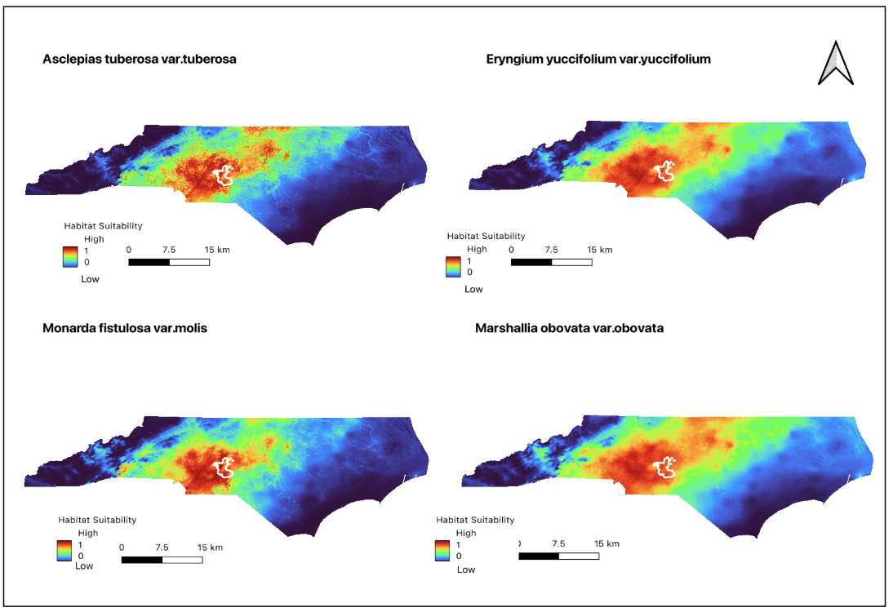
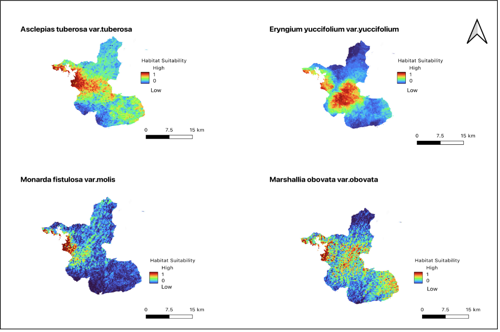
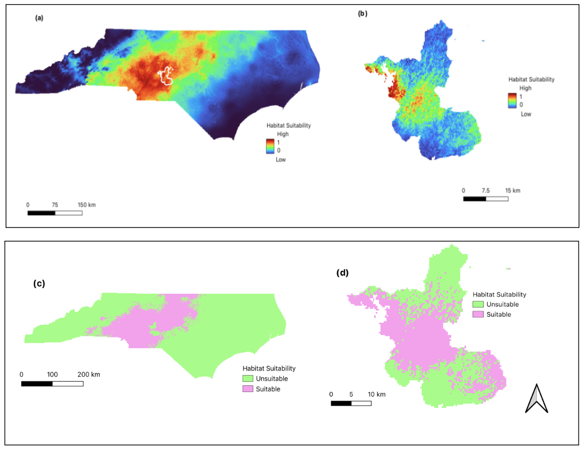

Species distribution modeling using MaxEnt to predict habitat suitability across North Carolina and the Uwharrie National Forest.
ArcGIS Pro • QGIS • MaxEnt Modeling
Geospatial analysis, species distribution modeling, cross-validation, and habitat suitability visualization for conservation planning.

MaxEnt modeling maps showing species occurrence distribution focused on the state scale. Created across 1,000 cross-validated replicates.

MaxEnt modeling maps showing species occurrence distribution focused on the study area. Created across 1,000 cross-validated replicates.

MaxEnt map results for state-scale and study-area models. Shows suitable predicted habitats and binary classification maps of suitable vs. unsuitable areas.
Full analysis detailing model methodology, cross-validation results, and conservation implications.
View Full Paper